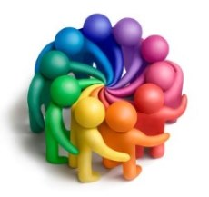

Nos projets
Un chantier qui n'attend que vous !

L'objetif principal du Comité de Haid est de mettre en place des activités tout au long de l'année, afin de créer des moments de
rencontres indispensables à la création de liens entre les habitants du village.
Le chantier qui se profile devant nous est gigantesque et les idées qui nous trottent en tête sont
nombreuses.
Cependant nous ne souhaitons pas nous imposer à vous, nous souhaitons construire avec vous. Nous souhaitons favoriser
l'émergence de vos projets, de vos envies et de vos besoins.
C'est pourquoi nous avons besoin de tout un chacun. A nous de partager avec envie notre part de savoirs et de rêves
pour notre épanouissement à tous.
Une société en bonne santé est à l'image d'une raquette de tennis. Un cadre adapté et un maillage solide, basé sur l'entrelacement des
différentes cordes, capablent ainsi d'être performant. C'est en unissant nos forces, nos compétences et nos envies que nous pourrons
faire de Haid une entité vivante.
Vous désirez participer à l'aventure humaine proposée et/ou participer à l'amélioration de ce site ?
Contactez-nous !